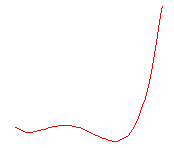

Contents |
y = A0 + A1x + A2x2 + A3x3 + A4x4
4th order Polynomial function.

Number: 5
Names: A0, A1, A2, A3, A4
Meanings: A0 = offset, A1 = cofficient, A2 = cofficient, A3 = cofficient, A4 = cofficient
Lower Bounds: none
Upper Bounds: none
nlf_Poly4(x,A0,A1,A2,A3,A4)
FITFUNC\POLY4.FDF
Polynomial, Baseline